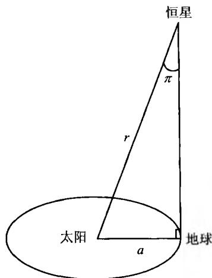
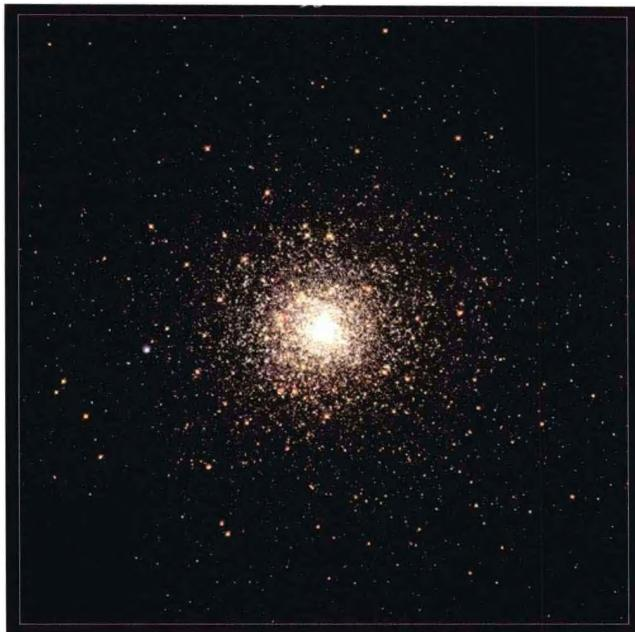
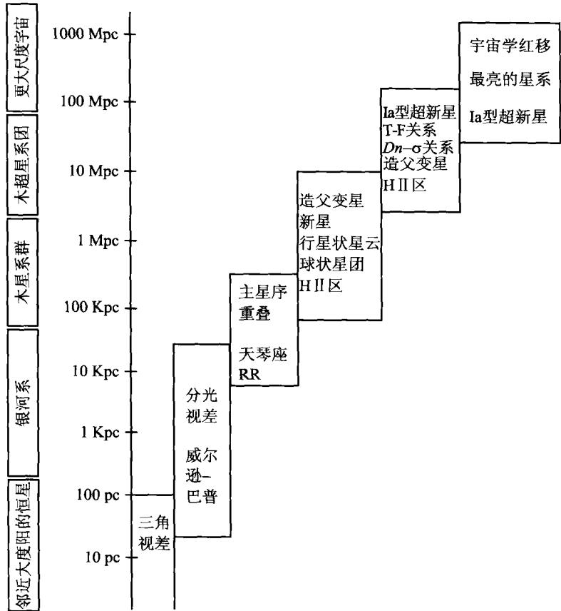

天体距离的测定是我们认识宇宙的基础。最直观的是，没有准确的距离测量，我们就不能准确了解天体的空间分布，也就无法知道宇宙在各种尺度上的真实结构。此外，在对天体的各种物理性质及演化的研究中，天体距离的测定往往也要先行一步。例如，绝对星等(光度)是建立赫罗图的重要参量，而绝对星等直接与恒星的距离有关。在对整个宇宙演化的研究中，距离的测量更是起着举足轻重的作用。因为我们知道，光速是有限的，因而我们看到的越远的天体，它所展现的图像就相应于宇宙越早的时刻。也就是说，在我们观察宇宙的纵深时，是用距离换取了时间。近年来发现的宇宙加速膨胀，也正是基于遥远星系距离测量的结果。
现代最精确的测距方法当属雷达测距(或激光测距)。但是，恒星之间的距离太远，最近的也要以光年计，更不用说星系之间的距离了。因而除了在太阳系之内应用外，雷达测距方法对于更远的天体来说是鞭长莫及。一般说来，太阳附近的恒星距离可以通过几何学的方法（视差法）测量，而银河系内以及较近星系的距离测量则要根据恒星的某些物理特征，这些特征与恒星的真实亮度之间有相关性，因而这些特征可以作为恒星真实亮度的标准烛光，例如我们前面讨论过的造父变星的周光关系，以及下面将要谈到的一些其他关系。对于更远的距离，单个的普通恒星太暗了，因此需要更大更亮的标准烛光，例如超新星或者整个星系。对于最遥远的天体，就只有依靠红移和距离之间的哈勃关系了。这种使用不同标准烛光从近到远、逐级测距的办法称为宇宙距离阶梯（图2.19）。这里要强调的是，大距离上所用的标准烛光，必须与较近距离上的标准烛光校准后定标。
我们从太阳附近的恒星距离测量开始，这一测量依靠的是几何学方法。当地球围绕太阳做轨道运动时，太阳附近的恒星相对于非常遥远的背景恒星，会产生一种“视运动”，即它们相对于背景恒星的视位置会发生变化。这就像我们乘车行进

图2.17 测量恒星距离的三角视差法时，看到近处的物体相对于远处物体有明显移动一样。如果我们时隔半年对一颗近距离的恒星两次拍照，并把这两次拍得的照片加以比较，就会立即测出这颗星在背景天空上的位移角度。显然，两次拍照时隔半年的目的是为了得到最大的角位移。再通过简单的几何计算，我们就可以把这一角位移换算成如图2.17所示的角度 \pi 即在图2.17所示的直角三角形中，太阳到地球的平均距离 a （即一个天文单位）所相对的顶角的角度。角度 \pi 称为恒星的周年视差，或简称视差，而这一距离测量方法就称为三角视差法。
如图 2.17, \pi 为恒星的周年视差, r 为恒星到太阳的距离, 则有
r = \frac {a}{\sin \pi} \approx \frac {a}{\pi} = 2 0 6 2 6 5 \frac {a}{\pi^ {\prime \prime}}\tag{2.22}
其中 \pi'' 表示 \pi 以角秒为单位（1弧度 = 57.3 \times 60 \times 60'' = 206265'' ）。定义 \pi'' = 1'' 时 r = 1\mathrm{pc} （pc表示parsec，即秒差距），则有
1 \mathrm{pc} = 2 0 6 2 6 5 a \simeq 3. 0 9 \times 1 0 ^ {1 8} \mathrm{cm} \simeq 3. 2 6 \text { 光年 }\tag{2.23}
显然，以秒差距为单位时，恒星的距离为
r = \frac {1}{\pi^ {\prime \prime}} \mathrm{pc}\tag{2.24}
以往三角视差法测距是利用地面望远镜进行的，但地球大气的干扰使得这一方法最远只能测量 \leqslant 50\mathrm{pc} 的距离，测得的恒星数目也只有几千颗。1989年8月欧洲空间局(ESA)发射了依巴谷天文卫星(Hipparcos)，专门用于三角视差法测距。从发射到1993年8月的4年观测寿命期间内，它已测出距离的恒星数目达12万颗，最远距离可达 100\mathrm{pc} 。图2.7a所示的赫罗图，就是利用依巴谷天文卫星得到的4万多颗近距离恒星的观测资料绘制而成的。
当恒星距离大于 100\mathrm{pc} 时，三角视差法就不适用了，只有想其他的办法。人们发现，对于光谱类型相同的恒星，其光谱中总可以找到这样几条谱线，例如 \mathrm{SrII} 4078\AA 与FeI 4072\AA 等，其强度只随绝对星等(光度)而变。这样，如果较近恒星的绝对星等经过校准，就可以得到以上述典型谱线强度为横坐标、以绝对星等为纵坐标的“归算曲线”。因而，光谱型类似的较远恒星的绝对星等便可由归算曲线来确定。这种方法的适用距离达 30\mathrm{kpc} ，大大超过了三角视差法。目前运用这一方法已测定了好几万颗恒星的距离。
1957年威尔逊(O. Wilson)和巴普(M. Bappu)发现，G、K、M型恒星CaⅡ发射线宽度的对数与绝对星等成比例。因而可以利用CaⅡ发射线宽度，由较近的恒星定标，来确定较远的恒星的绝对星等。这种方法适用的距离大体上与分光视差法类似。
星团自身的大小总是远远小于星团到地球的距离，故一个星团中的恒星，可以看成是在与地球大致相同的距离上。尽管星团中的恒星几乎是在同一时刻形成的，但形成时的质量有大有小，而不同质量的恒星会呈现不同的光谱型。如果以视星等为纵坐标（实际上反映了绝对星等），以光谱型或色指数B-V为横坐标，就可以得到星团的赫罗图。把待测星团的赫罗图与太阳附近主序星的赫罗图重叠在一起（或与已知距离的星团的赫罗图重叠），它们的区别就仅仅是纵坐标的标度不同：一个是视星等，另一个是绝对星等。这样，由两图的纵坐标之差就可求出待测星团的距离，即由
m - M = 5 \lg r - 5\tag{2.25}
求出 r。显然，这一方法的依据是，光谱型相同的主序星都具有差不多相同的绝对星等。这一方法称为主星序重叠法，它可以用于测量远至 300 kpc 的星团距离。
前面谈到，造父变星是非常重要的“标准烛光”或“量天尺”。利用造父变星的周光关系，哈勃第一个测得了仙女座大星云M31的距离（他开始测得的距离为75万光年，后又改正为150万光年，现在准确的数值是220万光年），从而确认它是河外星系。目前已经测出周光关系的造父变星在银河系内已有数百颗，在河外星系中数以千计。但长期以来，造父变星周光关系的零点问题一直使天文学家感到困扰。零点即图2.11所示的周光关系曲线(图中为直线)与纵轴的交点，零点问题实际上也就是周光关系的定标问题。初看上去，原则上只要准确地知道一颗造父变星的光度(绝对星等)，即只要精确地测定一颗造父变星的距离，这个问题就会迎刃而解。但是，造父变星离太阳都非常遥远，几十年来，地面天文台没有测到过一颗造父变星的三角视差。天文学家只能采用其他一些方法(如统计法、星群视差法等)来求出它们的距离，因而周光关系的精度一直不够理想。直到1990年代，依巴谷卫星精密测定了银河系内223颗造父变星的三角视差，人们才有了比较精确的周光关系式
\langle M _ {\mathrm{v}} \rangle = - 2. 8 1 \lg P - 1. 4 3\tag{2.26}
其中 \langle M_{v}\rangle 为一个光变周期的平均绝对视星等，P为以天为单位的光变周期。利用周光关系定出的视差(距离)也称为造父视差。实际上，除了零点问题以外，周光关系还有一个更复杂的普适性问题，即(2.26)是根据银河系内的造父变星定出的，它是否适用于其他星系？研究表明，河外星系中的造父变星的某些特征与银河系中的并不完全一致，例如，大、小麦哲伦云中的造父变星各发现有1000多颗，它们周期最长的可达100～200天，比银河系中的要长；而周期短于3天的也很多，但银河系中却很少见。大、小麦哲伦云的金属丰度比银河系低好几倍，这会影响恒星的光度，从而影响到周光关系的零点。对这一问题现在还在继续研究，但估计这种影响至多只会有十分之几的星等。
天琴座 RR 型变星也是一把重要的“量天尺”。如前所述，尽管它们的光变周期不同，但平均绝对星等都在 0.6^{m} 左右，与周期无关。这样，只要确定了天琴座 RR 型变星的平均视星等，就可以求出它们的距离。但天琴座 RR 型星的光度是否也像造父变星那样与金属丰度有关？上个世纪 90 年代初的研究表明，它们的光度的确受到金属丰度的影响，平均绝对星等会产生 0.4^{m} 的弥散。此外，由于天琴座 RR 型星的光度比造父变星低，仅在银河系周围约 250 kpc 距离之内可见，因而使得它们在测量距离中的作用不如造父变星。
除了脉动变星以外，新星、超新星都可以用以作为测距的“标准烛光”。只要确定了是哪一类爆发变星，即可得知其最亮时的绝对星等，再根据它最亮时的视星等求得距离。特别是 Ia 型超新星，因为它们爆发时的光度最大，大型望远镜特别是空间望远镜巡天时较容易发现，故对宇宙大距离的测量日益重要。同时，它们的光变曲线已有了很好的归算曲线，因此只要获得少数几个观测亮度数据点，就不难利用归算曲线推断出最亮时的视星等。目前，Ia 型超新星能够测量到的宇宙学距离已达宇宙学红移 z \geqslant 1 ，宇宙加速膨胀的观测事实正是由此而发现的。
有些热星抛射出膨胀的气壳，当气壳被热星的光照亮时，就会形成看似行星一样的环状星云。行星状星云相当丰富（每个星系大约有几百个），并且它们发光的形式是尖锐的谱线，因而很容易被观测到。但是，单个的行星状星云并不是一个很好的距离指示，因为它们的光度范围很宽。实际采用的办法是，把一个星系中所有的行星状星云的光度函数（即星云个数与视星等的函数关系）画出来，再与由已知距离的星系所给出的普适光度函数（即星云个数与绝对星等的函数关系）相对照，就可以求得该星系的距离。利用这一方法测出的距离目前达到15 Mpc。
大的星际氢云会由于星云中的热星发出紫外辐射而电离并发光，成为 HⅡ区。在一些星系中，HⅡ区的大小可达几百个 pc，质量可达 10^{9} M_{\odot} 。对一些已知距离的星系，已经发现其中 HⅡ区的几何尺度、光度以及速度弥散与星系的光度是相关的。利用这些相关性，就可以从待测星系中的 HⅡ区特征推断出该星系的光度，从而得到星系的距离。
球状星团大致包含 10^{4} \sim 10^{6} 颗恒星，形成一个密集的球形体，一般分布在星系的外围区域。单个球状星团的光度有较大的弥散，通常是利用球状星团的光度函数，即观测一批球状星团，得到其光度分布。标准的球状星团的光度函数是根据银河系内的观测而得到的。把观测到的星系中球状星团的光度函数与标准光度函数相比较，就可以得出该星系的距离。
1977年突利(R. Tully)和费舍尔(J. Fisher)发现，旋涡星系中氢云发射的21cm谱线，其谱线宽度随星系的光度而增加，因而可以被用于指示光度。这一关系称为突利-费舍尔关系，也简称为T-F关系(见6.1.3节)。这样的谱线展宽后来也在谱的光学部分被发现。谱线展宽的原因是，气体云环绕星系中心做轨道运动产生多普勒频移，因此这一展宽常被称作速度弥散。最亮的星系具有最大的质量，因而也具有最大的轨道速度和最大的谱线展宽。
对于椭圆星系,法博(S. Faber)和杰克森(R. Jackson)1976年发现了恒星吸收线宽度和光度之间的一个类似相关性(见6.1.3节)，因而可以用于测定这些星系的距离。这一方法的最新形式是把光度和星系的表面亮度结合到一个参数 D_{n} 中，它与速度弥散相关，最后得到的关系称为 D_{n}-\sigma 关系。

图 2.18 “哈勃”拍摄的球状星团 NGC6093富星系团中最亮的星系通常是巨椭圆星系，它们具有大致确定的光度。例如在室女星系团、后发星系团以及半人马星系团中，最亮的巨椭圆星系的绝对星等约为 -23^{m} ，这就可以用来作为其他遥远星系团中最亮星系的标准烛光。
1929 年哈勃发现, 河外星系等遥远天体, 其谱线红移 z 与距离 r 成正比:
\begin{array}{r l} z & \equiv \frac {\Delta \lambda}{\lambda} = \frac {\lambda - \lambda_ {0}}{\lambda_ {0}} = \frac {H _ {0}}{c} r \\ & \Rightarrow r = \frac {c}{H _ {0}} z \end{array}\tag{2.27}
其中 \lambda_{0}, \lambda 分别为谱线原来的波长和红移后的波长，c 为光速， H_{0} 称为哈勃常数，这就是著名的哈勃关系。哈勃常数的一般表示形式是
H _ {0} = 1 0 0 h \mathrm{km} \mathrm{s} ^ {- 1} \mathrm{Mpc} ^ {- 1}\tag{2.28}
其中 h 是一个无量纲的常数，目前最新的观测值是 h \simeq 0.72 。实际上，哈勃关系只有当红移 z \ll 1 时才成立。对于红移较大的情况，结果就要复杂了，而且与其他一些宇宙学参数有关。我们将在第7章中再讨论这一情况。当红移 z \ll 1 时，设星系的绝对星等相同，则由(2.4)和(2.27)有
m \propto \lg r \propto \lg z\tag{2.29}
这就是星系的视星等-红移关系(见图7.11)，由此即可以根据观测到的星系红移得到它的距离。
表 2.4 测量天体距离的主要方法
表 2.4 归纳了测量天体距离的主要方法及其最远测量距离。图 2.19 表示宇宙距离阶梯。由上面的讨论可见，当我们应用宇宙距离阶梯时，每一级阶梯标准烛光的精度都需要依赖于前一级阶梯的精度。任何一种距离测定方法中的误差，都将影响到更大距离上的定标。例如，巴德在 1952 年曾指出，到那时为止所用的造父变星的周光关系是错误的，没有把经典造父变星和天琴座 RR 型变星区分开。他重新定标后发现，以前用周光关系测定的距离必须要增加一个 2 倍因子。这意味着，当时所有测定了的河外星系的距离都必须乘以 2 倍。这就是为什么哈勃最初测得的仙女座大星云的距离是 75 万光年，后又改为 150 万光年的原因。直到 20 世纪 80 年代末，系统误差的积累还使得在距离阶梯的最上边，所测距离具有大约 25% 的不确定性。令人欣慰的是，哈勃空间望远镜以及依巴谷卫星的发射，使得距离测量的精度大为提高，现在这一积累误差已减小到大约 10% 以内。
| 测量方法 | 最远测量距离 |
|---|---|
| 雷达测距 | 太阳系 |
| 三角视差 | 100 pc |
| 分光视差 | 30 kpc |
| 威尔逊-巴普法 | 30 kpc |
| 主星序重叠 | 300 kpc |
| 天琴座 RR 型星 | 300 kpc |
| 行星状星云 | 15 Mpc |
| 红超巨星 | 20 Mpc |
| 新星 | 20 Mpc |
| 造父变星 | 30 Mpc |
| 行星状星云 | 50 Mpc |
| 球状星团 | 50 Mpc |
| HII区(光度) | 100 Mpc |
| T-F关系 | 100 Mpc |
| D_n - \sigma 关系 | 100 Mpc |
| 最亮椭圆星系 | >1 000 Mpc |
| I a型超新星 | ~4 000 Mpc |
| 哈勃关系 | 目前已测到 z~7 |

图2.19 宇宙距离阶梯